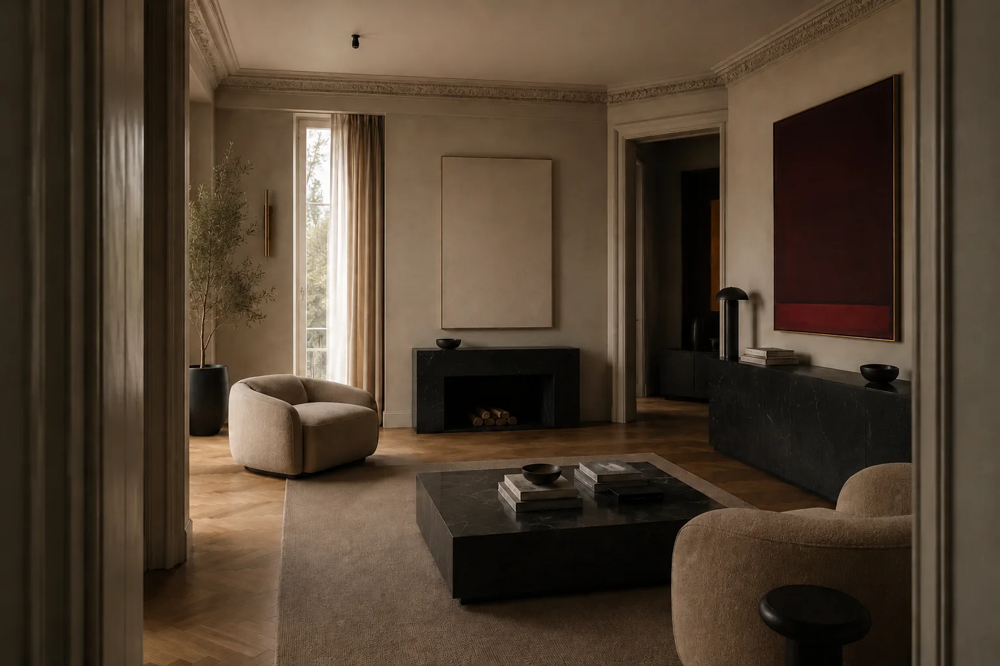
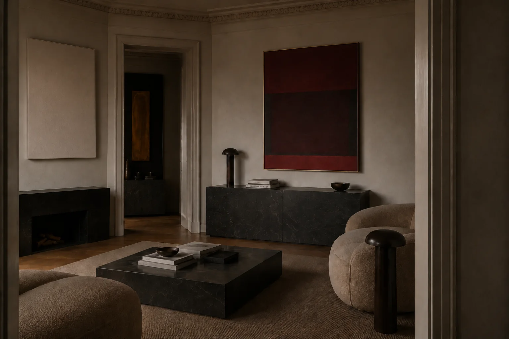
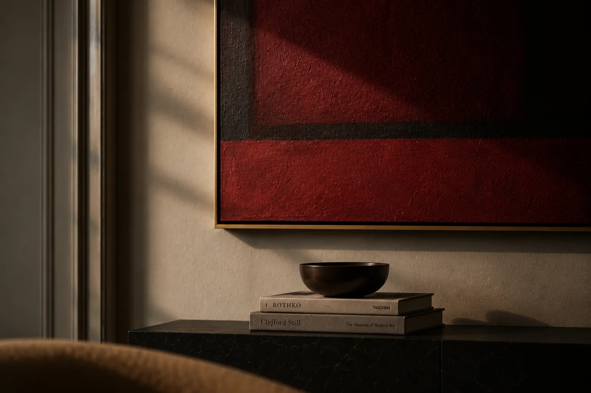
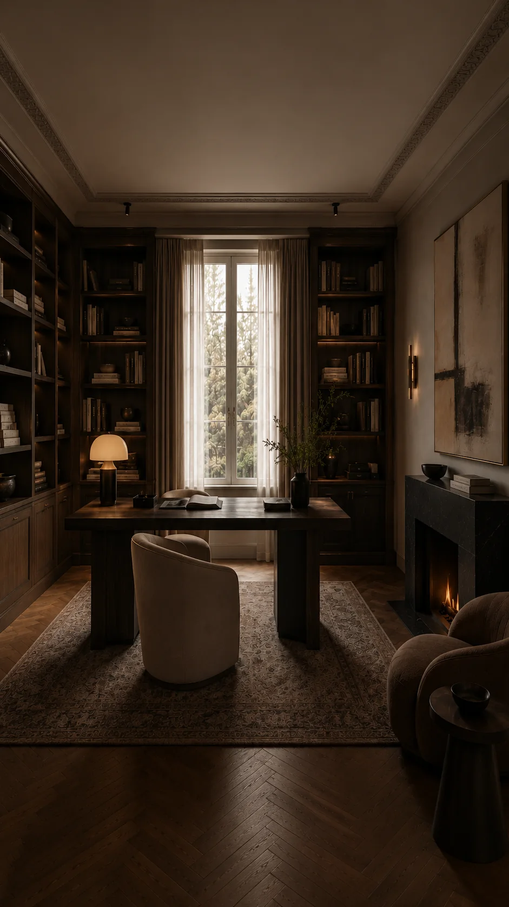
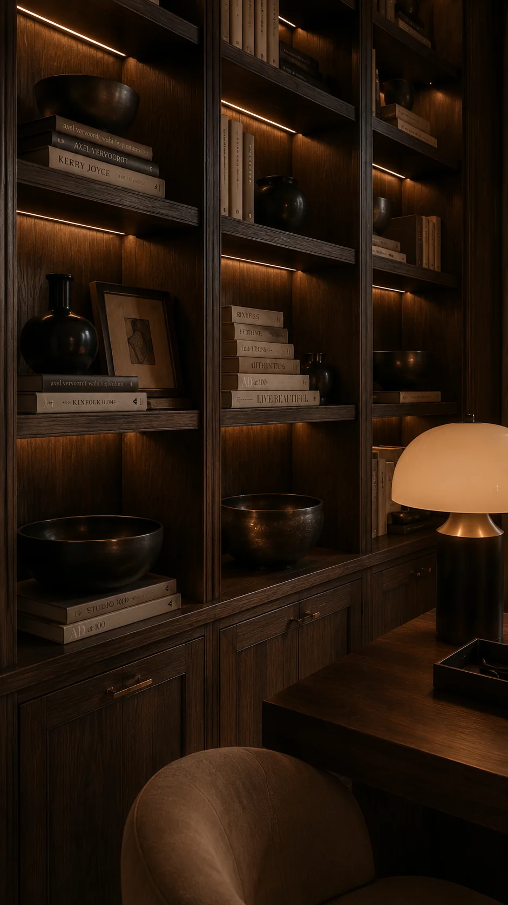
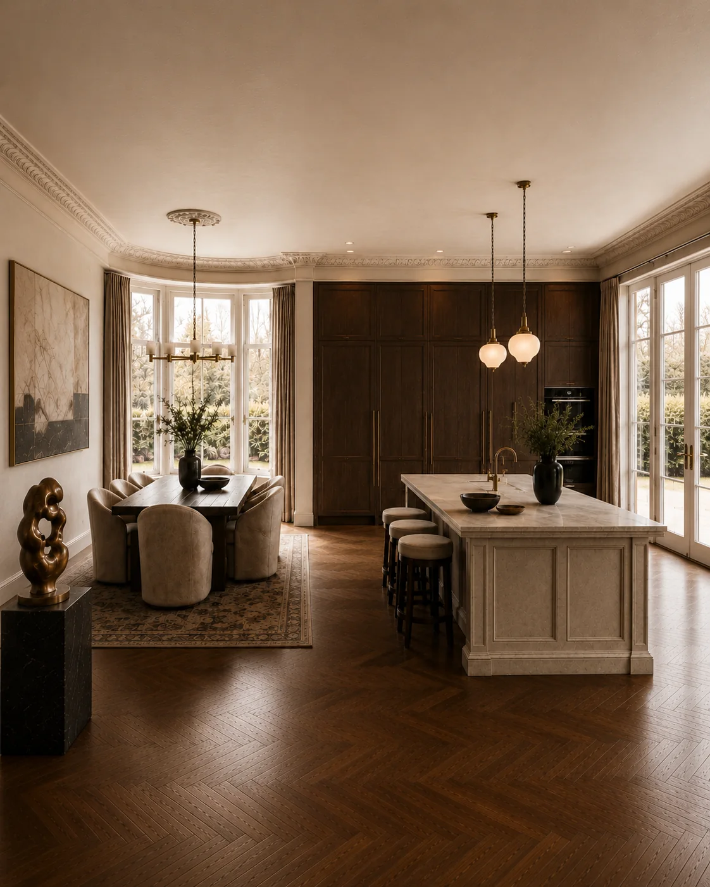
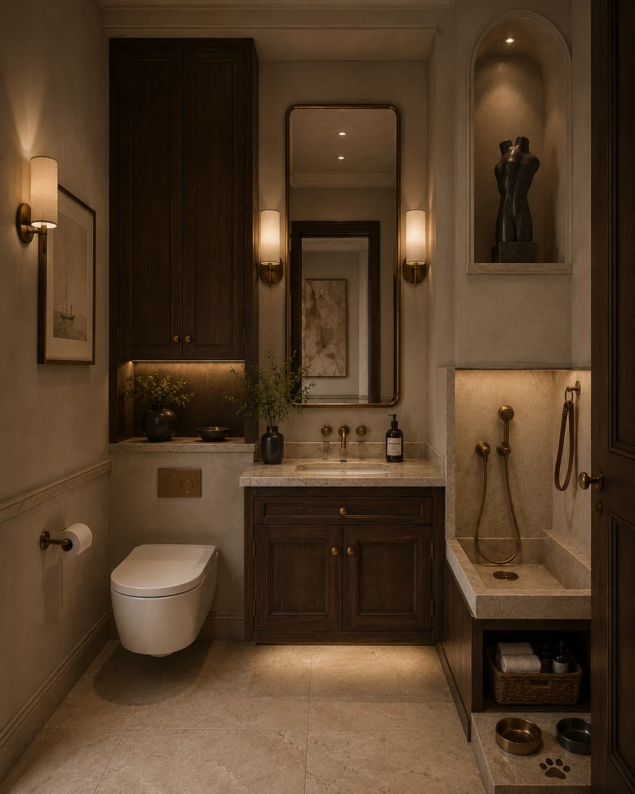
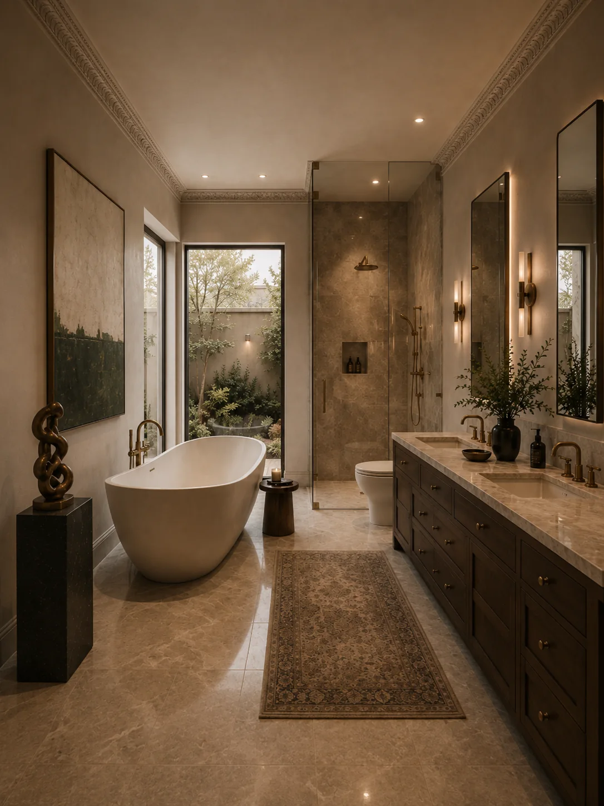
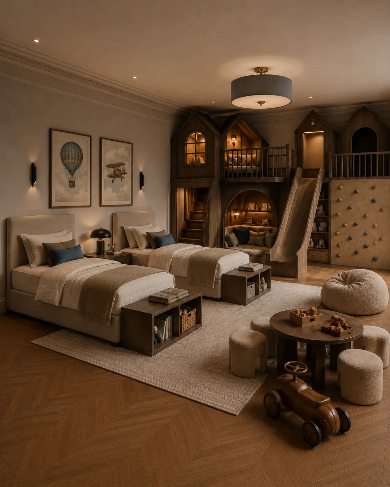
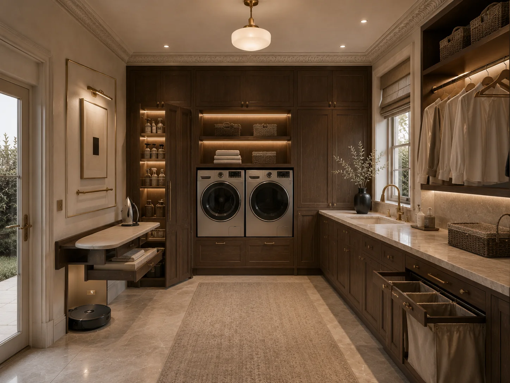

Проект 07
Дом для коллекции искусства
Дом, в котором искусство становится частью архитектуры: крупные полотна, скульптура, тёмное дерево и чёрный камень работают наравне с мебелью. В проекте предусмотрены кабинет-библиотека, семейная кухня, детская для двух мальчиков, мастер-ванная, гостевой санузел с лапомойкой и полноценная постирочная.
- Место
- Ленинградская область
- Тип
- Частный дом · Авторская концепция









